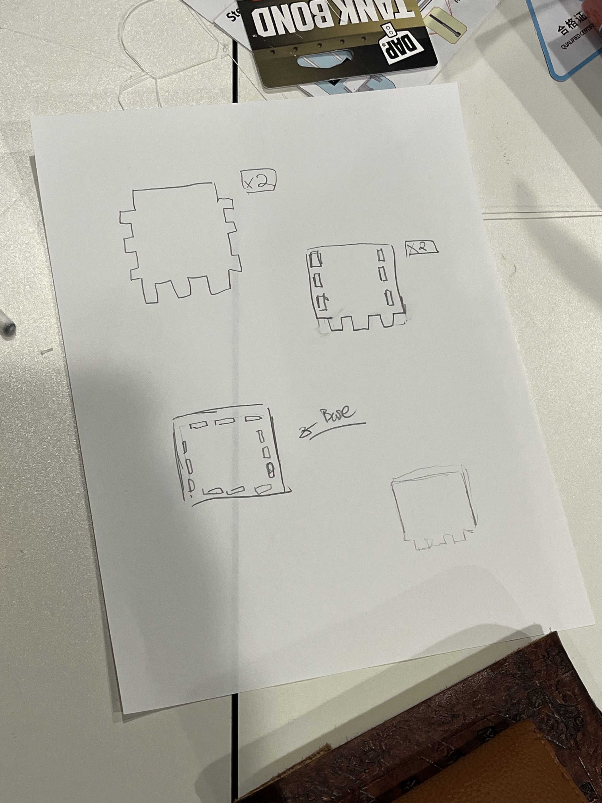

A2: Grasshoper
Click on the images below to download the rhino file:

To start off, I created some sketches for what my box would look like. I drew out what the parts would look like

I then created each of the parts in rhino. I was very mindful of creating dogbones wherever I needed them so that it could be properly milled out.
Here's model exported over into the Bantam tools software, and an image for when I was milling out my pieces out of the Copper plates.
Here are these pieces milled out from the plate. Unfortunately, the slits that were supposed to hold these pieces in place were too small, so I might need to go to Rhino and increase the size of the holes.